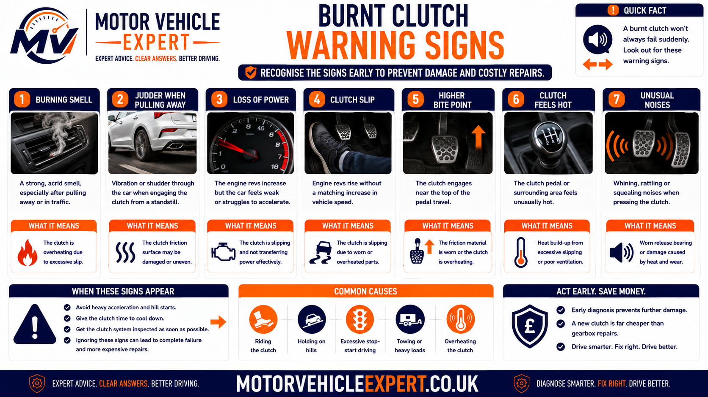
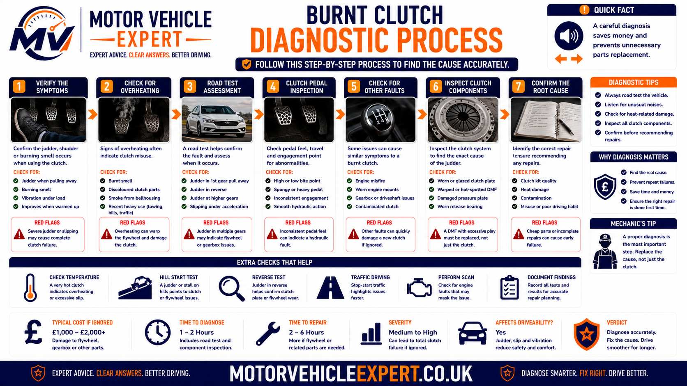
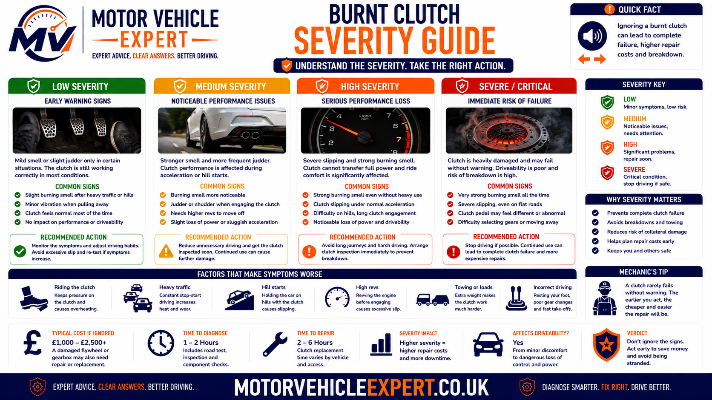
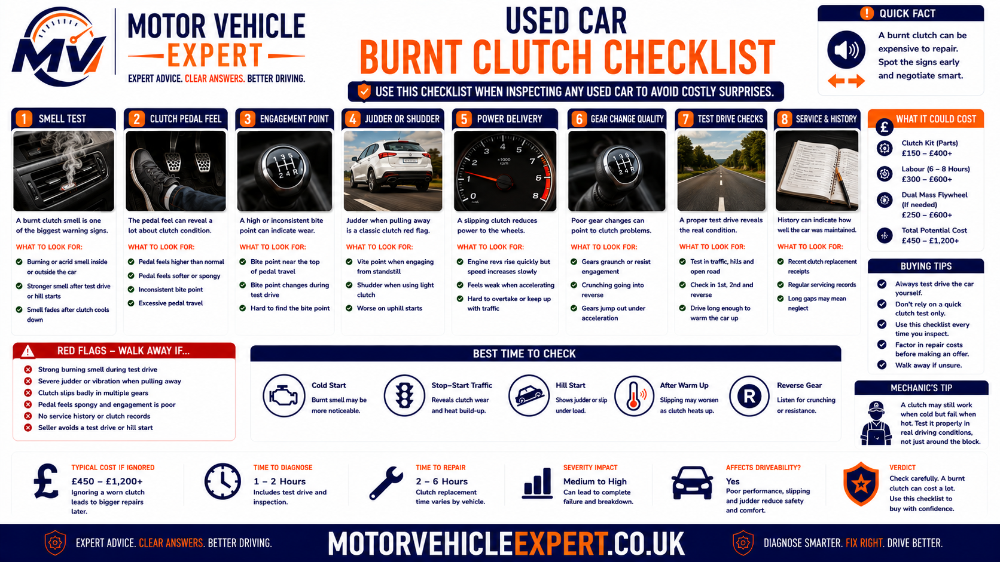

How can you tell if a clutch is burnt?
A burnt clutch usually reveals itself through a sharp hot-friction smell, clutch slip, rising engine revs without matching acceleration, an unusually high or inconsistent bite point, difficulty moving away, judder or smoke from the engine and gearbox area. One brief smell after a difficult manoeuvre does not always mean the clutch is permanently ruined, but repeated smells or any loss of drive require diagnosis.
The damage occurs because the clutch plate has been allowed to slip against the flywheel and pressure plate for too long. That slip converts engine energy into heat. If the temperature becomes excessive, the friction lining can glaze, weaken, crack or wear rapidly, while the pressure plate and flywheel may develop hot spots or distortion.
Most recognisable symptom
A strong acrid smell similar to overheated brakes, burnt paper or hot friction material, usually after pulling away, reversing, climbing a hill or manoeuvring.
Most important driving clue
Engine speed rises when accelerating but road speed does not increase proportionally because the clutch can no longer hold the engine's torque.
Can it recover?
Cooling may remove the smell after a minor overheating event, but worn, glazed or heat-damaged friction material does not repair itself.
Best next step
Allow the clutch to cool, avoid further slipping and arrange inspection if the smell returns or the vehicle slips, judders, smokes or struggles to move away.
Judge the clutch by what happens after it has cooled. If engagement returns to normal and the smell does not return, the clutch may have survived a temporary overheating event. If slip, judder, a high bite point or poor acceleration remains, permanent wear or heat damage is more likely.
Repeated high-gear acceleration tests, hill starts or prolonged slipping can turn a partially damaged clutch into a complete failure. Diagnosis should confirm the symptom with the minimum necessary load, not deliberately create more heat.
Use the Motor Vehicle Expert Diagnostic App to record when the smell appears, whether the engine revs rise, how the bite point feels and whether the vehicle judders or loses acceleration. The app can organise the symptom evidence before a garage inspection, but it cannot confirm internal clutch condition without physical checks.
What are the symptoms of a burnt clutch?
A burnt clutch does not always produce every symptom at once. The first sign may be a temporary hot-friction smell after a difficult hill start or slow manoeuvre. As heat damage and wear increase, the clutch may begin slipping, engaging inconsistently or struggling to transfer engine torque into the gearbox.
The most useful evidence comes from the combination of symptoms. A burning smell by itself may indicate temporary overheating, but a burning smell together with rising engine revs, poor acceleration, judder or smoke makes permanent clutch damage much more likely.
Burning friction smell
A sharp, acrid smell similar to overheated brakes, burnt paper or hot friction material often appears after excessive clutch slip. It may enter the cabin or be strongest near the engine and gearbox area.
Engine revs rise
The engine speed increases during acceleration, but the vehicle does not gain road speed at the expected rate. This indicates that some engine torque is being lost through clutch slip.
Poor acceleration
The car may feel slow, weak or hesitant despite the engine sounding busy. The problem is often most noticeable uphill, during overtaking or when accelerating in a higher gear.
High clutch bite point
The clutch may begin engaging close to the top of the pedal travel. A high bite point can support a wear diagnosis, although hydraulic design and adjustment must also be considered.
Difficulty pulling away
The vehicle may need more engine speed than usual, hesitate before moving or struggle to climb a hill because the clutch cannot transfer torque effectively.
Clutch judder
Heat-damaged, glazed or contaminated friction surfaces can grip and release unevenly, causing the car to shake as the clutch reaches its bite point.
Smoke near the bellhousing
Severe overheating can produce visible smoke from the area where the engine and gearbox meet. Smoke indicates significant heat and should be treated as an urgent warning.
Loss of drive
In advanced failure, the engine may rev but the vehicle barely moves or does not move at all because the clutch can no longer hold against the flywheel.
Symptoms that often appear together
Smell but normal drive
A brief smell appears after reversing, hill starting or slow manoeuvring, but the clutch returns to normal after cooling and no slip remains.
Smell, judder and high bite
The clutch smells repeatedly, engages less smoothly and bites higher in the pedal travel. Heat damage or significant friction wear is becoming more likely.
Slip, smoke or lost drive
Engine speed rises sharply, acceleration falls away, smoke appears or the vehicle struggles to move. The clutch may be close to total failure.
A smell after one difficult manoeuvre is less conclusive than a smell that returns during normal driving. Persistent slip, poor acceleration or judder after the clutch has cooled is stronger evidence that lasting damage has occurred.
For a more detailed comparison between clutch, brake, oil and rubber smells, read the clutch burning smell guide .
How does a clutch burn?
A manual clutch transfers engine power by clamping a friction-lined clutch plate between the flywheel and pressure plate. When the clutch is fully engaged, these components rotate together. While the clutch is partially engaged, the plate slips against the flywheel and pressure plate so engine speed and gearbox speed can match progressively.
Some controlled slip is necessary every time the vehicle moves away. The problem begins when the clutch remains in this slipping phase for too long or is forced to transmit more torque than its worn friction surfaces can hold. The speed difference between the engine and gearbox is then converted into heat.
1. Pedal begins rising
The pressure plate starts clamping the clutch plate against the flywheel as the driver releases the pedal.
2. Controlled slip begins
The plate slips briefly so the stationary gearbox can match the speed of the rotating engine without a sudden shock.
3. Excess slip creates heat
Holding the clutch at the bite point or applying excessive engine torque increases friction time and rapidly raises surface temperature.
4. Friction surfaces are damaged
The clutch lining may glaze, crack or wear, while the pressure plate and flywheel can develop heat spots and distortion.
Why clutch heat builds so quickly
During clutch slip, the engine is producing torque while the clutch plate and flywheel are rotating at different speeds. The greater the torque, the larger the speed difference and the longer the slip continues, the more heat the assembly must absorb.
This is why a heavily loaded vehicle, steep hill start, trailer manoeuvre or high-rev pull-away can overheat a clutch much faster than a normal start on level ground.
Glazed friction lining
Excessive heat hardens and polishes the friction surface. A glazed clutch may slip, grab or judder because its coefficient of friction is no longer consistent.
Pressure plate hot spots
Localised overheating can create discoloured areas, uneven contact and distortion on the pressure plate face.
Flywheel heat damage
The flywheel may develop blue spots, cracking or an uneven friction surface. A damaged flywheel can cause repeat problems even after a new clutch is fitted.
A cooled clutch may temporarily grip better because its temperature has fallen, but worn lining, glazing, distortion and cracked components remain. Recurring symptoms after cooling should not be dismissed.
Early, developing and severe burnt clutch warning signs
Burnt clutch symptoms often develop in stages. Recognising the early stage gives the driver the best chance of preventing a temporary overheating event from becoming a clutch-and-flywheel replacement.

Progression is not identical on every vehicle. A badly worn clutch can move from mild slip to loss of drive quickly when subjected to a hill, heavy load or repeated stop-start use.
Temporary overheating
- Burning smell after a difficult manoeuvre
- Clutch feels hot or slightly different
- No continuing slip after cooling
- Normal acceleration returns
- No smoke or major pedal change
Wear or glazing becoming obvious
- Smell returns during ordinary use
- Bite point becomes higher
- Judder or grabby engagement appears
- Acceleration weakens under load
- Clutch may slip in higher gears
Clutch cannot hold engine torque
- Engine revs rise sharply
- Vehicle barely accelerates
- Smoke appears near the bellhousing
- Strong smell persists
- Drive may be lost completely
A worn clutch may still move the vehicle away but begin slipping in fourth, fifth or sixth gear when engine torque is high. That symptom suggests the clutch has moved beyond a simple one-off overheating event.
Compare these signs with the dedicated high-gear clutch slip guide and the broader clutch slipping symptoms guide .
What causes a clutch to overheat and burn?
Clutch overheating can result from driving technique, vehicle load or a mechanical fault. A healthy clutch can become hot when misused, while a worn or contaminated clutch may slip even when the driver is using the controls correctly.
Riding the clutch
Resting a foot on the pedal can apply enough release force to reduce clamping pressure. Continuous light slip creates heat and accelerates wear.
Likelihood: HighHolding the car on the bite point
Balancing the vehicle on a hill with clutch slip keeps the friction surfaces partially engaged and can generate severe heat in a short period.
Likelihood: HighRepeated hill starts
Moving a heavy vehicle uphill requires more torque and a longer take-up period. Poor technique or an already worn clutch increases the risk.
Likelihood: High under loadTowing or heavy loading
Additional vehicle mass raises clutch load during pull-away, reversing and low-speed manoeuvring, especially on inclines.
Likelihood: Load dependentSlow traffic
Repeated creeping with the clutch partially engaged can prevent the assembly from cooling and create cumulative heat.
Likelihood: Medium to highWorn friction material
A thin or polished clutch lining cannot hold as much torque. It begins slipping more easily, which creates additional heat and accelerates failure.
Likelihood: High on older clutchesOil contamination
Engine or gearbox oil on the clutch plate reduces and destabilises friction. The plate may slip, overheat, judder or grab.
Likelihood: MediumHydraulic release fault
A master cylinder, slave cylinder or release mechanism that does not allow full clutch engagement may leave the clutch partially released while driving.
Likelihood: Vehicle dependentIncorrect adjustment
On adjustable cable systems, insufficient free play can prevent full pressure-plate clamping and cause continuous slip.
Likelihood: System dependentWrong or poor-quality components
An unsuitable clutch kit, incorrect release parts or low-quality friction material may not hold the vehicle's torque reliably.
Likelihood: Higher after repairDamaged pressure plate
Weak diaphragm pressure, heat distortion or uneven clamping reduces the force holding the clutch plate against the flywheel.
Likelihood: MediumFlywheel problems
A damaged solid flywheel or worn dual mass flywheel can prevent smooth, consistent torque transfer and contribute to overheating.
Likelihood: Vehicle dependentA clutch can overheat because it is already worn, contaminated or failing to engage fully. Where the smell appears during ordinary driving, the complete clutch, flywheel and release system should be assessed before blaming technique.
Driving situations that commonly overheat a clutch
The clutch is most vulnerable when the vehicle is moving slowly but the engine is producing significant torque. These conditions require the clutch to spend longer in its slipping phase.
Reversing uphill
Reversing up a slope combines low speed, restricted visibility and high load. Drivers often use excessive engine speed and prolonged clutch slip to maintain control.
Parking on a steep incline
Repeated forward and reverse movements can build heat rapidly, particularly when the vehicle is held stationary using the clutch instead of the parking brake.
Trailer manoeuvring
Slow reversing with a trailer places high torque through the clutch while airflow and cooling are limited.
Stop-start congestion
Continuous creeping rather than allowing a safe gap and engaging the clutch fully can keep the clutch hot for an extended period.
Pulling away in the wrong gear
Attempting to move away in second or another high gear requires extra slip and engine torque, increasing clutch temperature.
Recovering a stuck vehicle
Trying repeatedly to drive out of mud, snow or a deep rut can create extreme clutch load and heat with very little vehicle movement.
Hold the vehicle securely with the parking brake, establish a suitable engine speed and release the clutch progressively. This reduces the time spent balancing the car on the bite point.
What does a burnt clutch smell like?
A burnt clutch usually smells sharp, dry and acrid. Drivers commonly compare it with overheated brakes, burnt paper, hot electrical material or burning rubber. The smell may enter the cabin through the ventilation system or be strongest outside near the centre of the engine and gearbox area.
Appears after manoeuvring
A smell after reversing, parking, hill starting or towing strongly supports clutch overheating because those situations create long periods of controlled slip.
Returns during normal driving
A smell that reappears without heavy clutch use suggests that the clutch may already be slipping because of wear, contamination or insufficient clamping pressure.
Persists after stopping
Friction components can remain hot after the vehicle is parked. Persistent strong odour, smoke or unusual noises indicate a more serious overheating event.
Other smells that can be confused with a burnt clutch
| Smell source | Typical smell | Supporting clues |
|---|---|---|
| Burnt clutch | Dry, acrid hot-friction smell | Appears after take-up, hill starts, reversing or clutch slip |
| Overheated brakes | Similar hot-friction smell | One wheel may be unusually hot; smell follows braking |
| Engine oil leak | Oily smoke or burnt petroleum smell | Oil may reach the exhaust; smoke often comes from engine bay |
| Coolant leak | Sweet, chemical smell | Possible steam, coolant loss or temperature concerns |
| Electrical fault | Hot plastic or insulation smell | Electrical failure, smoke or blown fuse may accompany it |
| Rubber contacting exhaust | Burning rubber smell | Damaged hose, belt or underbody material may be visible |
If the source of smoke is uncertain, stop safely and switch off the engine where appropriate. Do not assume smoke is harmless clutch vapour because oil, wiring and other materials can create a fire risk.
When oil leakage is suspected, the oil leak advisory guide explains how leak severity, MOT relevance and repair urgency are assessed. A rear crankshaft or gearbox input seal leak can also contaminate the clutch internally.
Clutch slip and poor acceleration
Clutch slip is one of the strongest signs that overheating has moved beyond a temporary smell and into a fault affecting torque transfer. When the pressure plate clamps the clutch plate against the flywheel, the friction lining should hold strongly enough for engine torque to pass into the gearbox. If the lining is worn, glazed, contaminated or insufficiently clamped, the surfaces continue rotating at different speeds.
The engine may sound healthy and respond quickly to the accelerator, but the vehicle does not gain speed at the same rate. The missing energy is converted into additional clutch heat, which can accelerate the failure rapidly.
Revs rise without speed
Engine speed increases sharply under acceleration while road speed follows slowly or remains nearly unchanged.
Worse in higher gears
Slip often appears first in fourth, fifth or sixth gear because the clutch must hold high engine torque without the multiplication provided by a low gear.
Worse uphill or loaded
Hills, passengers, luggage and towing increase drivetrain load, making a weak clutch lose grip more readily.
Acceleration improves when throttle is reduced
A slipping clutch may regain partial grip when engine torque is lowered, but this does not mean the fault has repaired itself.
Smell follows acceleration
The friction smell may return after a short period of heavy load because the slipping surfaces are creating more heat.
Drive may disappear when hot
A severely worn clutch can hold when cold but lose most of its grip as temperature rises.
A brief controlled assessment by a competent technician may help confirm the fault, but repeatedly accelerating hard in a high gear generates additional heat and may leave the vehicle without drive.
For a full comparison of slip symptoms, road-test clues and repair urgency, see the clutch slipping symptoms guide . When the problem appears mainly under high engine load, also read clutch slip in high gears .
High bite point and clutch pedal changes
A worn clutch often begins taking up close to the top of the pedal travel because the friction lining has become thinner and the pressure plate geometry has changed. A high bite point can support a clutch-wear diagnosis, but it is not proof by itself because cable adjustment, hydraulic design and component condition vary between vehicles.
High bite point
The vehicle begins moving only when the pedal is nearly fully released. This is common with clutch wear but should be judged alongside slip and smell.
Changing bite point
A bite point that moves after the clutch becomes hot may indicate friction changes, hydraulic problems or pressure-plate behaviour.
Grabby engagement
Heat-damaged or glazed surfaces may engage suddenly rather than progressively, making smooth pull-away difficult.
Pedal remains partly depressed
A pedal that does not return fully may prevent complete clutch engagement and create continuous slip.
Pedal becomes unusually light
Sudden loss of resistance may indicate a hydraulic or release mechanism fault rather than friction wear alone.
Pedal becomes heavy or rough
Release bearing, guide tube, fork, cable or pressure-plate problems can increase pedal effort and affect clutch engagement.
Record whether the bite point, pedal weight or engagement quality changes after ordinary driving. A temperature-related change can help the technician separate friction damage from a fixed adjustment characteristic.
The high clutch bite point guide explains how wear, hydraulic systems and cable adjustment affect pedal position. If the pedal stays down or loses pressure, compare the symptoms with clutch pedal stuck down and clutch pedal goes to the floor .
Clutch judder and difficult pull-away
A burnt clutch does not always slip smoothly. Heat can glaze or damage the friction surfaces so they grip and release repeatedly while the clutch is engaging. The resulting vibration passes through the gearbox, engine mounts and vehicle body as clutch judder.
Judder through the bite point
The car shakes while the pedal is partially released, then becomes smoother once the clutch is fully engaged.
More throttle is needed
The driver may use higher engine speed to overcome grabby or weak engagement, creating even more heat.
Worse when hot
Heat-damaged friction surfaces may become increasingly inconsistent after slow traffic or repeated pull-aways.
Worse uphill
Additional torque demand makes worn or glazed surfaces more likely to slip, grab or shake.
Reverse may feel worse
Reverse changes the direction of drivetrain loading and can expose mount movement, clutch irregularity or flywheel wear.
Knocking may indicate another fault
Heavy clunks or movement through the gear lever can indicate worn engine mounts, gearbox mounts or flywheel problems as well as clutch damage.
Holding the clutch at the bite point may temporarily reduce shaking, but it increases surface temperature and can worsen glazing, flywheel damage and friction-material wear.
For a complete fault comparison covering clutch, flywheel, mounting and engine causes, see clutch judder when pulling away .
Smoke, strong odour and loss of drive
Smoke from the engine-to-gearbox area indicates that the clutch assembly or another nearby component has reached a high temperature. The clutch lining, oil contamination, wiring, rubber or leaked fluid can all produce smoke, so the source should never be assumed without inspection.
Smoke during a hill start
Prolonged clutch slip under high load can overheat the lining rapidly and produce visible vapour or smoke around the bellhousing.
Drive fades as heat rises
The clutch may hold briefly when cool and then lose grip as the friction surfaces become hotter.
Vehicle will not move
The engine may rev normally while the car remains stationary or moves only slightly because the clutch can no longer transmit usable torque.
What to do if the clutch is smoking
- Move to a safe place without creating additional clutch slip.
- Apply the parking brake and select neutral.
- Switch off the engine where safe and appropriate.
- Keep passengers away from traffic and visible smoke.
- Do not open or dismantle hot components.
- Do not pour water into the bellhousing or engine bay.
- Arrange roadside assistance or recovery.
- Call emergency services if there are visible flames or an uncontrolled fire.
A newly fitted clutch may require a period of gentle use, but visible smoke, severe smell, lost drive or heavy judder after replacement requires immediate investigation by the fitting garage.
How a mechanic diagnoses a burnt clutch
A professional diagnosis should confirm whether the clutch has suffered temporary overheating, permanent friction damage or a mechanical fault that is keeping it partially released. The process begins with symptom history and external checks before gearbox removal is considered.
1. Record the overheating event
Establish whether the smell began after a hill start, towing, reversing, congestion, recovery attempt or ordinary driving.
2. Check current clutch operation
Assess pedal return, bite point, smoothness, clutch release and whether gears select correctly.
3. Confirm slip symptoms
Determine whether engine speed rises without matching road speed under normal controlled load.
4. Check the release system
Inspect cable adjustment, hydraulic fluid, master cylinder, slave cylinder and release mechanism for incomplete engagement.
5. Check for contamination
Look for engine or gearbox oil around the bellhousing and identify possible rear crankshaft or input shaft seal leaks.
6. Assess mounts and flywheel clues
Check excessive powertrain movement, judder, idle rattle, shutdown knock and other signs of mounting or dual mass flywheel wear.
7. Review repair history
Confirm whether the clutch, flywheel, slave cylinder, oil seals or mounts have been replaced and whether symptoms followed recent work.
8. Inspect internally if justified
Remove the gearbox to inspect the clutch plate, pressure plate, release system, flywheel and contamination source when evidence supports dismantling.

Replacing only the clutch plate may not solve the problem if an oil leak, release-system fault, flywheel defect or incorrect adjustment caused the overheating.
Questions the mechanic should answer
Is the clutch actually slipping?
Poor acceleration can also come from engine, turbocharger, fuel, transmission or brake faults. The technician should confirm that engine and gearbox speed are separating because of clutch slip.
Did technique or a fault create the heat?
A single misuse event requires a different explanation from a clutch that overheats repeatedly during normal driving.
Can the clutch engage fully?
Hydraulic pressure, cable adjustment or release-mechanism binding may prevent full clamping even when the pedal is released.
What else needs replacement?
The flywheel, concentric slave cylinder, release bearing, oil seals and mounting fasteners may require attention during the same repair.
External checks before gearbox removal
- Check engine idle quality and warning lights.
- Confirm the pedal returns fully without assistance.
- Inspect clutch fluid level where a hydraulic system is fitted.
- Look for leaks around the master and slave cylinders.
- Check cable free play where adjustment is provided.
- Inspect engine and gearbox mounts for excessive movement.
- Look for fresh oil around the engine and gearbox joint.
- Listen for release-bearing or flywheel-related noise.
- Confirm whether the symptom changes after cooling.
- Review invoices for recent clutch or gearbox work.
Record the event, smell, pedal position, road conditions, load, acceleration behaviour and temperature changes in the Motor Vehicle Expert Diagnostic App . A structured history can help the garage reproduce the fault without repeatedly overheating the clutch.
Once the labour has been authorised, the inspection should cover the friction lining, pressure plate, flywheel, release components, contamination source and accessible seals. Failing to assess the full assembly increases the risk of repeat labour.
What different burnt clutch symptom patterns may mean
Symptom patterns help prioritise inspection, but they do not replace physical testing. Several faults can exist together, especially on a high-mileage vehicle or one that has recently received clutch work.
| Symptom pattern | Likely direction | Next check |
|---|---|---|
| One-off smell after difficult manoeuvre | Temporary overheating possible | Allow cooling and confirm whether normal operation returns |
| Smell returns during ordinary driving | Ongoing slip, wear or incomplete engagement | Check pedal, hydraulics, adjustment and torque-holding ability |
| Engine revs rise in higher gears | Clutch unable to hold torque | Confirm controlled load slip and plan clutch inspection |
| Smell plus judder while pulling away | Glazing, heat damage or contamination | Inspect mounts, flywheel clues and internal clutch condition |
| High bite point but no slip | Wear possible but not proven | Compare system design, adjustment and road-test behaviour |
| Pedal fails to return fully | Hydraulic or release-system fault | Check master cylinder, slave cylinder and mechanism movement |
| Oil visible near bellhousing | Possible clutch contamination | Trace engine or gearbox oil source before replacement |
| Smoke and severe loss of drive | Major overheating or advanced failure | Stop driving and arrange recovery |
| Symptoms began after clutch replacement | Installation, contamination or flywheel concern | Return promptly to the fitting garage |
A clutch may grip better after cooling because friction temperature has fallen. The underlying wear, glazing or release fault can still return as soon as the assembly is loaded again.
Burnt clutch severity guide
The urgency depends on whether the symptom was a one-off overheating event or an ongoing loss of clutch grip. The vehicle's ability to move predictably and safely matters more than the strength of the smell alone.

Use the severity level with associated symptoms such as pedal changes, oil leakage, judder and abnormal flywheel or release-system noise.
One-off smell with normal operation
The smell followed an identifiable difficult manoeuvre, clears after cooling and the clutch does not slip, judder or behave differently.
Avoid repeat overheating, use correct clutch technique and arrange inspection if the smell or any other symptom returns.
Recurring smell or early slip
The smell appears during normal use, the bite point is changing, acceleration is weakening or the clutch judders after warming up.
Limit driving, avoid hills, towing and congestion, and book a structured clutch diagnosis promptly.
Smoke, severe slip or lost drive
The engine revs without useful acceleration, smoke appears, the vehicle cannot move away safely or the pedal and engagement change suddenly.
Stop in a safe location and arrange professional assistance or recovery rather than attempting to continue.
Factors that increase urgency
- The smell returns during normal driving.
- Slip becomes noticeable in more than one gear.
- Acceleration deteriorates over a short distance.
- The clutch judders or grabs violently.
- The bite point or pedal feel changes suddenly.
- Oil or hydraulic fluid is leaking.
- There is a flywheel rattle, knock or grinding noise.
- Smoke appears from the engine and gearbox area.
- The vehicle cannot move away predictably.
- Symptoms began immediately after recent clutch work.
A slipping clutch can deteriorate rapidly under load and may leave the vehicle stranded in traffic or on a hill. Early recovery is safer than continuing until no drive remains.
Can you drive with burnt clutch symptoms?
Whether the vehicle can be driven depends on what remains after the clutch has cooled. A brief smell after one difficult manoeuvre is very different from a clutch that continues slipping, juddering or losing drive during ordinary use.
The deciding factor is not simply whether the engine still runs. The vehicle must be able to move away, accelerate and join traffic predictably without excessive slip or sudden loss of drive.
One-off smell with normal operation
The smell followed a clear high-load event, disappears after cooling and the clutch returns to normal without slip, judder, pedal change or poor acceleration.
Recurring smell or mild slip
The clutch still moves the vehicle but the smell returns, the bite point has changed or acceleration weakens under load.
Smoke, severe slip or lost drive
The engine revs without useful acceleration, the vehicle struggles to move, smoke appears or the clutch and pedal behaviour change suddenly.
Stop driving immediately if:
- Smoke appears from the engine and gearbox area.
- The vehicle cannot move away safely or predictably.
- Engine revs rise sharply with almost no acceleration.
- The clutch pedal fails to return or changes suddenly.
- The vehicle loses drive while entering traffic or climbing a hill.
- There is loud grinding, heavy knocking or violent judder.
- A significant oil or hydraulic-fluid leak is visible.
- The burning smell remains extremely strong after stopping.
- The fault worsens significantly within a short journey.
- There is any sign of fire rather than friction smoke alone.
Applying extra engine speed may keep a slipping clutch moving for a short time, but it increases the amount of heat created and can turn a manageable fault into total loss of drive.
How to reduce clutch load before inspection
Avoid high-load conditions
Do not tow, carry unnecessary weight, climb steep hills or choose a congested stop-start route while the clutch condition is uncertain.
Use the parking brake correctly
Hold the vehicle on hills with the parking brake rather than balancing it on the clutch bite point.
Leave manoeuvring space
Avoid repeated forward-and-reverse movements that keep the clutch partially engaged and prevent cooling.
Stop if slip increases
If engine speed begins rising more easily or the vehicle struggles to maintain road speed, stop before complete drive loss.
Continued clutch slip can overheat the pressure plate and flywheel as well as the friction lining. Recovery may avoid turning a clutch-kit repair into a larger clutch-and-flywheel replacement.
Will a burnt clutch fail an MOT?
Clutch wear and clutch friction condition are not normally inspected as separate items during the standard UK MOT test. A vehicle does not automatically fail because the clutch smells burnt, has a high bite point or shows early signs of slip.
However, the MOT is not a clutch-condition certificate. Related defects such as insecure engine or gearbox mountings, serious fluid leaks or another problem affecting safe control may still be relevant. A vehicle must also be capable of being driven safely onto and off the test equipment.
Burnt clutch smell alone
A friction smell is not normally a direct MOT failure item where no testable defect is identified.
Clutch slip
Clutch slip is not generally measured as a separate wear test, but severe loss of drive may prevent safe testing.
Insecure powertrain mounting
A badly damaged or insecure engine or gearbox mounting can be relevant where component security or vehicle safety is affected.
Serious oil leakage
A significant engine or gearbox oil leak may be assessed according to severity, location, environmental impact and safety risk.
Hydraulic-fluid leak
Some clutch systems share a reservoir with the braking system. Leakage affecting brake-fluid level or brake operation can become directly safety relevant.
Engine fault mistaken for clutch slip
Warning lights, emissions faults or poor engine running may be assessed separately even where the driver first suspected a clutch problem.
Why an MOT pass does not prove the clutch is healthy
The tester does not remove the gearbox, inspect clutch lining thickness, measure pressure-plate clamp force or assess the internal flywheel surface. A clutch can pass an MOT and fail shortly afterwards under normal road load.
| Condition | Likely MOT relevance | Recommended action |
|---|---|---|
| One-off burnt smell with normal clutch operation | Not normally a direct test item | Monitor and inspect if the smell returns |
| Recurring clutch slip | Not normally measured as clutch wear | Repair before drive deteriorates further |
| Vehicle cannot move safely | Test may not be completed safely | Recover and repair before presenting it |
| Severely insecure engine or gearbox mounting | May be a testable safety defect | Repair before the MOT |
| Significant oil leakage | May be recorded or fail depending on severity | Trace and repair the source |
| Hydraulic leak affecting brake-fluid level | Potential braking-system relevance | Do not drive until inspected |
| Engine-management warning light and poor acceleration | May be relevant separately | Diagnose engine and clutch symptoms independently |
Used-car buyers should assess the smell, slip and pedal behaviour directly. Remaining MOT validity does not guarantee that the clutch, flywheel or release system is serviceable.
For the wider UK test position, read can a clutch fail an MOT? The oil leak advisory guide explains how leak severity and repair urgency may be assessed.
How much does it cost to repair a burnt clutch?
A burnt clutch is usually repaired by replacing the damaged clutch assembly rather than attempting to restore overheated friction material. The final cost depends on vehicle design, gearbox-removal time, parts quality and whether the flywheel, hydraulic release bearing or oil seals also require replacement.
These figures are broad UK planning estimates rather than fixed quotations. Main-dealer labour, premium vehicles, four-wheel-drive systems, performance models and restricted gearbox access can increase the total substantially.
Clutch inspection and road test
Symptom history, controlled road test, pedal and bite-point assessment, leak inspection and checks of the release system.
£60–£150Clutch kit replacement
Replacement clutch plate, pressure plate and release bearing where the fitted design uses a separate bearing.
£550–£1,100Clutch and dual mass flywheel
Replacement of the clutch kit and worn dual mass flywheel during the same gearbox-removal operation.
£900–£1,800+Concentric slave cylinder
An internal hydraulic release bearing normally requires gearbox removal and is often replaced with the clutch.
£150–£400 additionalClutch master cylinder
Replacement and bleeding where the master cylinder causes poor release control or prevents full clutch engagement.
£180–£450External slave cylinder
Replacement of an externally mounted slave cylinder followed by bleeding and operational checks.
£150–£350Rear crankshaft seal with clutch
Repair of an engine rear oil seal and replacement of contaminated clutch components while the gearbox is removed.
£700–£1,400+Input shaft seal with clutch
Repair of a gearbox input-area oil leak together with replacement of oil-contaminated friction components.
£700–£1,500+Engine or gearbox mount
Replacement of a failed mounting where excessive powertrain movement contributes to judder or poor take-up.
£150–£500 eachSolid flywheel repair or replacement
Inspection and, where technically suitable, professional resurfacing or replacement of a heat-damaged solid flywheel.
£150–£600 additionalFault after recent clutch replacement
Initial investigation may be covered by warranty or may be chargeable while the fitting garage determines the cause.
£0–£300 initial assessmentGearbox oil replacement
Correct gearbox oil may be renewed during clutch work where draining is required or the existing oil condition is poor.
£60–£180 additionalA useful quotation should state the expected clutch-kit price and the likely total if the flywheel, internal slave cylinder or oil seals are also found defective after gearbox removal.
Burnt clutch repair-cost decision table
| Diagnosis or finding | Likely repair | Broad UK estimate | Repair priority |
|---|---|---|---|
| One-off smell, no continuing symptoms | Inspection and monitoring | £60–£150 | Diagnose if the smell returns |
| Confirmed clutch slip, flywheel serviceable | Clutch kit replacement | £550–£1,100 | Repair before drive deteriorates |
| Clutch and dual mass flywheel worn | Clutch kit and DMF | £900–£1,800+ | Major high-priority repair |
| Oil-contaminated clutch | Repair leak and replace clutch | £700–£1,500+ | Repair source and damage together |
| Concentric slave cylinder leaking | Slave cylinder and usually clutch | £650–£1,250+ | Avoid repeat gearbox-removal labour |
| Failed engine or gearbox mounting | Replace affected mounting | £150–£500 each | Prompt if movement is excessive |
| Burnt clutch after recent replacement | Warranty inspection and installation review | Warranty dependent | Return to the fitting garage promptly |
| Engine fault mistaken for clutch slip | Engine diagnosis and fault-specific repair | £80–£1,000+ | Confirm the system before clutch work |
| Severe heat damage to solid flywheel | Flywheel resurfacing or replacement with clutch | £700–£1,400+ | Do not reuse an unsuitable surface |
What should a clutch quotation include?
- The exact clutch kit brand and component list.
- Whether the release bearing is included.
- Whether a concentric slave cylinder is included.
- Whether the flywheel is included or priced separately.
- How the existing flywheel will be assessed.
- Whether gearbox oil and hydraulic bleeding are included.
- Whether accessible engine and gearbox oil seals will be checked.
- Whether engine and gearbox mounts will be inspected.
- Whether new single-use bolts and fasteners are included.
- The parts and labour warranty period.
- The process for authorising additional work.
A low clutch quote may exclude the flywheel, internal slave cylinder, oil seals, gearbox oil or additional dismantling. The cheapest initial price can become the most expensive option if the gearbox must be removed again.
See the UK clutch replacement cost guide for a fuller breakdown of clutch-kit, flywheel and labour costs.
Questions to ask before authorising clutch replacement
Gearbox removal carries substantial labour, so the garage should explain why the clutch is being condemned and how associated components will be assessed once dismantling begins.
Diagnosis questions
- Was clutch slip confirmed during a controlled road test?
- Was the pedal and release system checked?
- Were engine and gearbox mounts inspected?
- Is oil contamination suspected?
- Are there dual mass flywheel symptoms?
- Could the acceleration problem be engine related?
Repair-scope questions
- Which clutch components will be replaced?
- How will the flywheel be inspected?
- Is the slave cylinder inside the bellhousing?
- Will accessible oil seals be assessed?
- Will removed components be available to view?
- What warranty covers parts and workmanship?
Ask the garage to contact you with photographs, measurements or a clear explanation before exceeding the agreed estimate. This keeps the clutch, flywheel and oil-seal decisions transparent.
Should you buy a used car with burnt clutch symptoms?
A burnt clutch smell during a used-car test drive should be treated as an unresolved mechanical warning until evidence proves otherwise. The smell may have been caused by poor technique during one manoeuvre, but it can also indicate clutch wear, contamination, flywheel damage or a release system that is preventing full engagement.
Do not accept claims that the smell is normal, that every manual car behaves that way or that the clutch only needs to cool down. Ask for an independent inspection and price the credible complete repair before paying a deposit or committing to the vehicle.
One-off smell with evidence
The smell followed an identifiable driver error, the clutch operates normally after cooling and an independent inspection finds no slip, judder, leakage or abnormal pedal behaviour.
Mild symptoms with no diagnosis
The clutch still drives normally, but the bite point is high, the smell has occurred more than once or there is no reliable clutch and flywheel history.
Slip, smoke or severe judder
Engine revs rise without matching acceleration, smoke appears, the car struggles to move away or the seller refuses an independent inspection.

Never deliberately abuse a seller's vehicle to test the clutch. Normal controlled acceleration and pull-away behaviour should provide enough evidence to justify a professional inspection.
Before starting the engine
Check the repair history
- Look for an itemised clutch replacement invoice.
- Confirm the date and mileage of the repair.
- Check which clutch kit brand was fitted.
- Ask whether the flywheel was replaced or reused.
- Confirm whether the slave cylinder was renewed.
- Check the parts and labour warranty period.
Check the vehicle condition
- Look beneath the car for fresh fluid leakage.
- Inspect the engine and gearbox joint where visible.
- Confirm the engine is genuinely cold if possible.
- Check the clutch pedal returns fully.
- Look for warning lights before start-up.
- Ask when the smell or other symptoms first appeared.
During the test drive
Pull-away behaviour
Move away normally on level ground. The clutch should engage progressively without excessive revs, violent judder or a sudden grab.
Acceleration behaviour
Under ordinary safe acceleration, engine speed and road speed should rise together. A flare in revs supports clutch slip.
Pedal and bite point
Note whether the bite point is unusually high, inconsistent or changes after the vehicle warms up.
First gear and reverse
Compare forward and reverse take-up in a safe location. Strong directional differences may also indicate mounting movement.
Noise and vibration
Listen for flywheel rattle, release-bearing noise, shutdown knocking and movement through the gear lever.
Smell after driving
A burnt clutch smell after an ordinary road test is a stronger warning than a seller's report of one previous difficult manoeuvre.
Questions to ask the seller
- When was the burnt clutch smell first noticed?
- What driving situation caused it?
- Has the smell returned during normal driving?
- Does the clutch slip in higher gears or uphill?
- Has the bite point changed recently?
- Has the vehicle ever produced clutch smoke?
- Has the clutch, flywheel or slave cylinder been replaced?
- Were any engine or gearbox oil leaks repaired?
- Has a garage diagnosed the current symptoms in writing?
- Will the seller allow an independent pre-purchase inspection?
Clutch friction condition is not fully assessed during an MOT. A car can have a fresh certificate and still require an expensive clutch, flywheel or hydraulic repair.
Until the clutch is inspected, assume the repair could involve the clutch kit, flywheel, internal slave cylinder and an oil seal. The purchase price should leave enough financial room for that possibility.
Accept, negotiate or walk away?
The correct decision depends on the strength of the evidence, the value of the vehicle and whether the purchase price reflects the likely repair. A cheap vehicle is not good value if clutch failure immediately removes its usable transport value.
| Used-car condition | Recommended decision | Reason |
|---|---|---|
| One-off smell, normal road test and independent inspection passed | Consider purchasing | No continuing evidence of slip, heat damage or incomplete engagement |
| High bite point but no confirmed slip | Negotiate and obtain inspection | Wear is possible, but pedal position alone is not proof |
| Smell returns during an ordinary test drive | Pause the purchase | Ongoing clutch slip or incomplete engagement is likely |
| Revs rise without matching acceleration | Assume clutch replacement risk | The clutch is failing to hold engine torque |
| Smoke, severe judder or difficulty moving away | Walk away | The vehicle may be unsafe and close to losing drive |
| Recent clutch repair with complete invoice and active warranty | Require the fault to be resolved first | Installation, flywheel or contamination issues may remain |
| Seller refuses an independent inspection | Walk away | The repair and safety risk cannot be assessed properly |
| Vehicle discounted by less than the credible complete repair | Renegotiate or reject | The price does not compensate for the mechanical uncertainty |
Pre-diagnostic burnt clutch checklist
Accurate observations help a technician diagnose the cause without repeatedly overheating the clutch. Record what happened before, during and after the smell appeared, and avoid deliberately reproducing severe slip.
Record the driving event
- Hill start or level road
- Forward or reverse manoeuvre
- Towing or heavy load
- Stop-start congestion
- Vehicle stuck or being recovered
- Normal driving without unusual load
Record the symptoms
- Strength and duration of smell
- Engine revs rising
- Poor acceleration
- High or changing bite point
- Judder or grabby engagement
- Smoke or lost drive
Record what happened after cooling
- Smell cleared completely
- Normal acceleration returned
- Slip remained
- Pedal behaviour changed
- Judder continued
- Fluid leakage appeared
Safe checks a driver can make
- Check that the clutch pedal returns fully.
- Check whether gears select normally while stationary.
- Listen for abnormal noise during engine start-up and shutdown.
- Observe whether the engine idles smoothly.
- Look beneath the car for fresh fluid leakage.
- Check available clutch and flywheel repair invoices.
- Note whether the smell returns during gentle normal use.
- Record warning lights or engine-running symptoms.
- Avoid repeated hill starts or high-load testing.
- Stop the test if clutch slip worsens.
Enter the symptoms and operating conditions into the Motor Vehicle Expert Diagnostic App before arranging a workshop inspection. A structured report can help distinguish clutch slip from an engine-performance problem, but internal clutch condition still requires physical assessment.
Checks to leave to a competent technician
- High-load clutch slip confirmation.
- Powertrain movement testing under controlled load.
- Hydraulic pressure and release travel assessment.
- Working beneath a raised vehicle.
- Removal of undertrays or bellhousing covers.
- Gearbox removal.
- Dual mass flywheel movement measurement.
- Clutch plate and pressure plate inspection.
- Flywheel run-out and heat-damage assessment.
- Oil-seal replacement and clutch-system bleeding.
Clutch diagnosis may require access around the gearbox and bellhousing. Correct lifting equipment, safe support points, level ground and competent working practices are essential.
How to prevent a clutch from overheating
A clutch is designed to slip briefly during take-up, not to control the vehicle's speed continuously. Good driving technique reduces heat, but recurring overheating during normal use should still be investigated as a mechanical problem.
Use the parking brake on hills
Hold the vehicle with the parking brake rather than balancing it on the clutch bite point.
Remove your foot from the pedal
Resting a foot on the clutch pedal can reduce clamping pressure and create continuous light slip.
Engage fully in slow traffic
Allow a safe gap and move with the clutch fully engaged rather than creeping continuously at the bite point.
Use the correct gear
Pulling away in an unsuitable high gear requires more clutch slip and engine torque.
Respect towing limits
Heavy trailers increase clutch load, particularly during reversing, hill starts and low-speed manoeuvring.
Investigate recurring smells
A healthy clutch should not repeatedly smell burnt during ordinary driving with correct technique.
A worn clutch, hydraulic fault, oil contamination or weak pressure plate may slip despite careful driving. If normal use creates smell or slip, arrange diagnosis rather than changing technique indefinitely.
Burnt clutch symptoms: key takeaways
Smell is often the first warning
A sharp hot-friction smell indicates clutch heat, especially after hill starts, reversing or prolonged low-speed manoeuvring.
Slip confirms torque loss
When engine revs rise without matching acceleration, the clutch is no longer holding engine torque effectively.
Cooling is not a repair
Temperature may fall and grip may improve, but worn, glazed or distorted components do not restore themselves.
The underlying cause matters
Driving technique, friction wear, oil contamination, hydraulics and flywheel condition can all contribute to overheating.
The MOT has limited relevance
A vehicle can pass its MOT while the clutch is worn or close to losing drive.
Used-car buyers need evidence
Price the credible clutch, flywheel and hydraulic repair before buying a vehicle with unexplained burnt clutch symptoms.
One brief burnt clutch smell does not automatically mean total failure, but recurring smell, slip, judder, smoke or lost drive should never be dismissed. Confirm why the clutch overheated and inspect the clutch, flywheel, release system and contamination sources as one connected assembly.
Related clutch, diagnostic and high-performing guides
Use these verified Motor Vehicle Expert guides to compare related clutch symptoms, understand repair costs, record diagnostic evidence and explore other practical UK vehicle problems.
Clutch burning smell
Compare clutch heat with brake, oil, rubber and electrical smells and learn when the vehicle should be stopped.
Clutch burning smell guide →Clutch slipping symptoms
Understand engine-speed flare, poor acceleration and the controlled checks used to identify torque loss.
Clutch slipping symptoms →Clutch slip in high gears
Learn why a worn clutch often begins slipping in fourth, fifth or sixth gear under heavy engine load.
High-gear clutch slip guide →Clutch judder when pulling away
Separate heat-damaged clutch engagement from flywheel, mounting and engine-running faults.
Clutch judder diagnosis →High clutch bite point
Understand how friction wear, adjustment and hydraulic design affect where the clutch begins engaging.
High clutch bite point guide →Clutch noise when pressed
Compare release-bearing, fork, pressure-plate and gearbox noises that change when the pedal is operated.
Clutch pedal noise guide →Clutch pedal goes to the floor
Diagnose sudden loss of hydraulic pressure, master-cylinder faults and slave-cylinder leakage.
Clutch pedal pressure guide →Clutch pedal stuck down
Learn why a clutch pedal may fail to return and when recovery is safer than continuing to drive.
Clutch pedal stuck guide →Clutch slip after replacement
Review contamination, flywheel condition, component compatibility and installation issues after recent clutch work.
New clutch fault diagnosis →UK clutch replacement costs
Compare clutch-kit, flywheel, slave-cylinder and labour costs before authorising a major repair.
Clutch replacement costs →Can a clutch fail an MOT?
Understand what the UK MOT does and does not inspect when a clutch is worn, slipping or difficult to operate.
Clutch and MOT guide →Diagnostic App
Organise smells, pedal behaviour, acceleration changes and driving conditions before arranging physical diagnosis.
Open the Diagnostic App →Oil leak advisory explained
Learn how oil-leak severity, MOT wording and repair urgency are assessed, including leaks capable of contaminating a clutch.
Oil leak advisory guide →Car losing coolant but no leak
Explore hidden coolant-loss causes, overheating risks and the checks needed before engine damage develops.
Hidden coolant-loss guide →Service light on after service
Understand why a service reminder may remain illuminated and how to separate a reset issue from a continuing vehicle fault.
Service light guide →Burnt clutch symptoms FAQs
These visible answers match the FAQ structured data in the page head.
What are the main symptoms of a burnt clutch?
Common burnt clutch symptoms include a strong hot friction smell, clutch slip, engine revs rising without matching acceleration, a high or inconsistent bite point, difficulty moving away, clutch judder, smoke and eventual loss of drive.
What does a burnt clutch smell like?
A burnt clutch usually produces a strong acrid smell similar to overheated friction material, hot brakes, burnt paper or burning rubber. The smell often appears after heavy clutch slipping, hill starts, towing or slow manoeuvring.
Can a clutch burn out suddenly?
A clutch can overheat and lose drive quickly if it is subjected to severe slipping, heavy load or an existing fault. More commonly, wear develops gradually before a final high-temperature event makes the symptoms much worse.
Can I drive with a burnt clutch?
Limited driving may be possible if the smell has cleared and the clutch operates normally, but continued slip, smoke, severe judder, poor acceleration or difficulty moving away requires prompt inspection. Stop driving if the vehicle cannot transmit drive safely.
Does a burning clutch smell mean the clutch is ruined?
Not always. A brief overheating event may produce a smell without permanent failure, especially if the clutch returns to normal after cooling. Repeated smells, slip, judder or a changing bite point suggest lasting wear or heat damage.
Will a burnt clutch recover after cooling down?
Cooling may reduce the smell and temporarily improve engagement, but it cannot restore worn friction material, remove glazing or reverse heat damage. If symptoms remain after cooling, the clutch requires diagnosis.
What causes a clutch to burn?
A clutch burns when excessive slip converts too much engine energy into heat. Common causes include riding the clutch, holding the car on the bite point, repeated hill starts, towing, heavy traffic, poor technique, clutch wear, contamination and release-system faults.
Can riding the clutch burn it out?
Yes. Resting a foot on the clutch pedal or keeping the clutch partially engaged allows the friction surfaces to slip continuously. This creates heat, accelerates wear and can glaze or damage the clutch plate.
Can hill starts damage the clutch?
Normal hill starts should not damage a healthy clutch when the parking brake and correct technique are used. Holding the vehicle on the clutch or using prolonged high-rev slipping can create excessive heat and rapid wear.
Can towing burn a clutch?
Yes. Towing increases the torque and heat generated during take-up, particularly on hills or during repeated low-speed manoeuvres. A worn clutch may begin slipping or overheating under the additional load.
Does a burnt clutch always slip?
Not always. Early heat damage may cause smell, judder or grabby engagement before obvious slip develops. Advanced clutch damage commonly causes engine speed to rise without a matching increase in vehicle speed.
Can a burnt clutch cause poor acceleration?
Yes. If the clutch cannot hold engine torque, some power is lost as heat instead of reaching the gearbox and wheels. The engine may rev freely while the vehicle accelerates slowly.
Can a burnt clutch cause smoke?
Severe clutch overheating can produce smoke from the bellhousing area. Smoke, a strong burning smell and loss of drive indicate significant heat and should be treated as a reason to stop driving.
How is a burnt clutch diagnosed?
Diagnosis includes confirming when the smell or slip occurs, checking pedal and bite-point behaviour, assessing acceleration under controlled load, inspecting the hydraulics and mountings, looking for contamination and examining the clutch and flywheel if gearbox removal is justified.
Will a burnt clutch fail an MOT?
Clutch wear is not normally tested as a separate MOT item, so a burnt clutch does not automatically cause failure. Related defects such as serious fluid leaks, insecure mountings or another fault affecting safe control may still be relevant.
How much does it cost to repair a burnt clutch in the UK?
A UK clutch replacement commonly costs several hundred pounds and may exceed one thousand pounds when a dual mass flywheel, concentric slave cylinder, oil seal or difficult gearbox-removal procedure is also required.
Should I buy a used car that smells of burnt clutch?
Treat a burnt clutch smell during a used-car test drive as a warning. Arrange an independent inspection, check for slip and judder, review clutch and flywheel invoices and price the credible repair before buying.
When should I stop driving with burnt clutch symptoms?
Stop driving if the clutch slips severely, smoke appears, the vehicle cannot move away safely, drive is being lost, the pedal changes suddenly or there is loud grinding, heavy judder or a persistent strong burning smell.